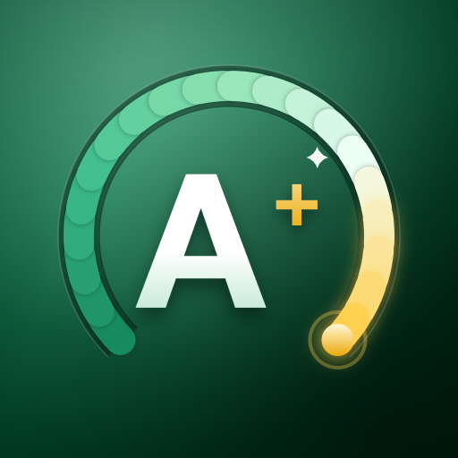

Last updated 12 November 2026
The short version: GPA Calculator BD is free. It has no ads, no purchases and no account, and it works completely offline. Its results are for your own reference and planning. Your official GPA or CGPA is whatever your education board or institution publishes, so always check an important number against your marksheet or transcript. Your data stays on your phone.
বাংলায় সংক্ষেপে: GPA Calculator BD সম্পূর্ণ ফ্রি — কোনো বিজ্ঞাপন, কেনাকাটা বা অ্যাকাউন্ট নেই, এবং পুরোপুরি অফলাইনে চলে। অ্যাপের ফলাফল শুধু আপনার নিজের হিসাব ও পরিকল্পনার জন্য। শিক্ষা বোর্ড বা আপনার প্রতিষ্ঠান যে ফলাফল প্রকাশ করে সেটিই অফিসিয়াল, তাই গুরুত্বপূর্ণ কোনো সংখ্যা মার্কশিট বা ট্রান্সক্রিপ্টের সঙ্গে মিলিয়ে নিন। এই অ্যাপ শিক্ষা বোর্ড, জাতীয় বিশ্ববিদ্যালয় বা ইউজিসি-র কোনো অ্যাপ নয়। আপনার তথ্য শুধু আপনার ফোনেই থাকে। নিচের ইংরেজি অংশটিই পূর্ণ শর্তাবলি।
By installing or using GPA Calculator BD you agree to these terms. If you do not agree, please uninstall the app.
GPA Calculator BD calculates grades in Bangladesh. It works out SSC, HSC, Dakhil and Alim GPA on the 5.00 scale, including the 4th subject rule. It works out semester GPA and CGPA for universities and National University on the 4.00 scale. It also has a target calculator, lets you build and share custom grading scales, and keeps a history of the results you save. Every calculation runs on your phone, offline.
The app is made by an independent developer. It is not an app of the Government of Bangladesh, the Ministry of Education, any education board, National University, the University Grants Commission (UGC) or any school, college or university, and it is not endorsed by them.
The app is free. It shows no ads, contains no in-app purchases or subscriptions, and needs no account. Every feature is available to everyone. If that ever changes, these terms will be updated before the version that changes it is released.
The subjects, marks, results, scales and settings you enter are kept only on your phone. The released app has no internet permission, so nothing you enter is ever sent to the developer or anyone else. Your data is erased if you clear the app's data or uninstall it. Android Auto Backup may keep a copy in your own Google account, and the app's export option lets you save a backup file yourself. The developer cannot recover data lost from a phone. The details are in the privacy policy.
The app, its design, icon and text are © Sakkar Chowdhury. You may use the app for your own calculations, and for helping students, for example as a teacher or parent. The results, result cards and scales you create are yours to save, print and share.
The app is built with open-source software and fonts used under their own licences (including Inter and Hind Siliguri under the SIL Open Font License). Nothing in these terms limits your rights under those licences.
Please don't copy, resell or redistribute the app, or reverse engineer it except where the law allows. Don't present a result card or screenshot from the app as an official marksheet, transcript or certificate, or alter one to misrepresent your result. Install the app from Google Play so you receive updates and corrections.
The app is provided "as is". It is made with care and its grading rules are tested, but the developer does not promise that it is free of mistakes, that its built-in scales match the rules of every board or institution at every time, that it will work on every device, or that it will always be available on Google Play. Your rights under consumer protection law that cannot be excluded are not affected.
To the extent the law allows, the developer is not liable for any loss from using the app or relying on its results. That includes decisions about admissions, applications, subject choices or study plans, and the loss of data stored on a phone. Nothing in these terms excludes liability that cannot be excluded by law.
These terms may be updated as the app changes; the date at the top shows the latest version. If you keep using the app after a change, you accept the updated terms.
| Date | Change |
|---|---|
| 12 November 2026 | First published, for version 1.0.2. |
Questions about these terms or the app: emailofs2o@gmail.com